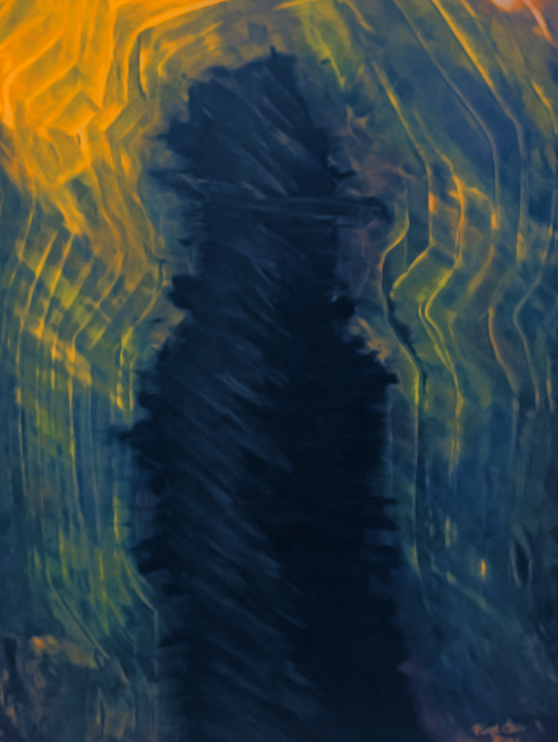
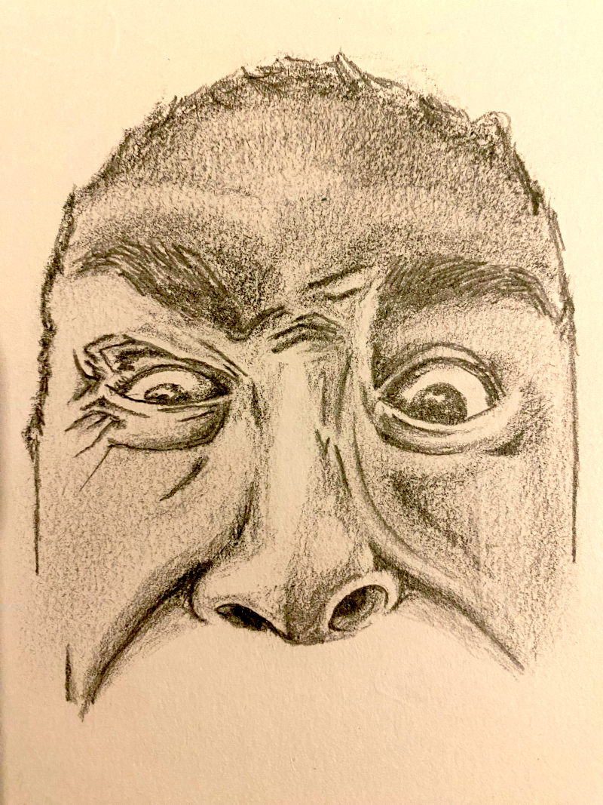
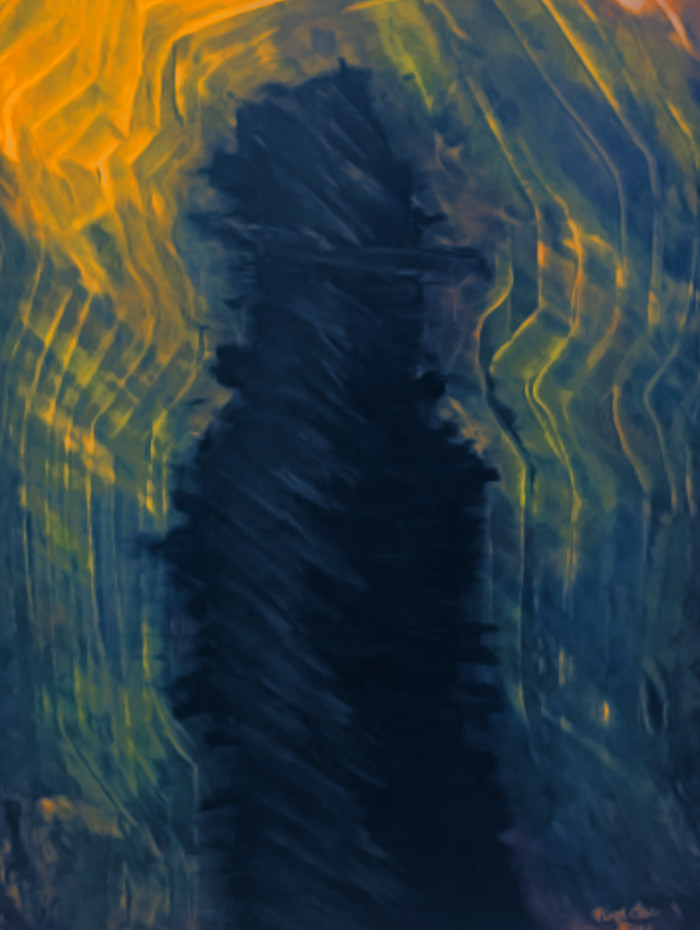
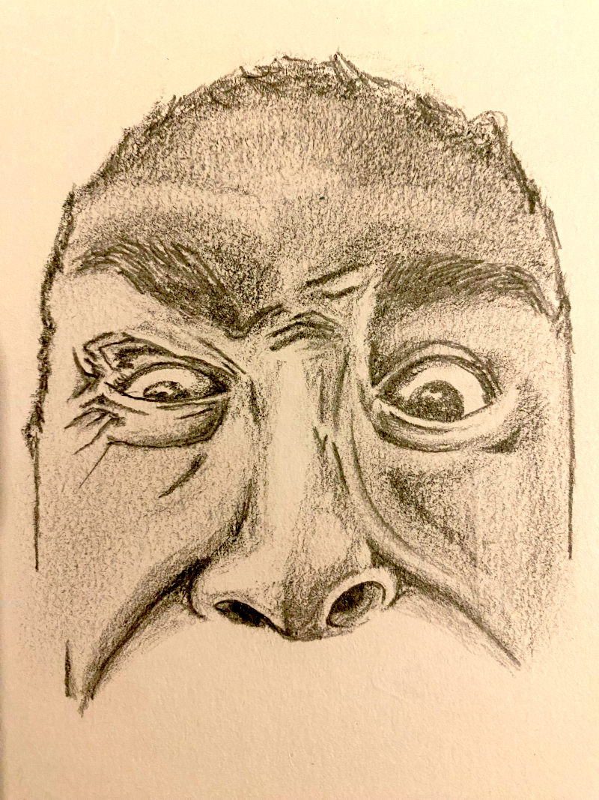

Über Mich
Als kreativer Geist mit einer Leidenschaft für Kunst, Musik und Sprache begann meine künstlerische Ausdrucksweise bereits im Ruhrgebiet, wo ich aufgewachsen bin. In Köln entfaltete sich diese Seite weiter und heute, in Berlin lebend, erweitern sich die Horizonte. Die Schwerpunkte liegen in der Malerei mit Öl- und Acrylfarben sowie in Zeichnung, Fotografie und Videografie. In der Musikproduktion bewege ich mich im Ambient-Kosmos, in elektronischen Klangwelten und erforsche mit analogen Synthesizern neue Soundschichten. Das Schreiben war mir schon immer ein treuer Verbündeter, von Dichterei und Haikus bis hin zu Erzählungen und Fantasiegeschichten. Auch in der Welt der Nullen und Einsen fühle ich mich heimisch und verfolge aktuell eine Weiterbildung. Die schnell voranschreitende Digitalisierung sehe ich als Chance, Kenntnisse zu vertiefen und mich weiter zu entwickeln, zumal ich mich schon seit meiner Adoleszenz mit diesem Bereich beschäftige.

 


